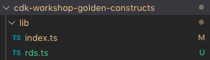
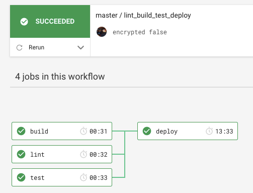

When defining Infrastructure as Code (IaC) in AWS, writing YAML CloudFormation templates is probably the most common choice among Enterprises. Main reason being that CloudFormation is a first-class service in the AWS ecosystem. It is completely integrated with all the other services in the platform and keeps getting updates and improvements over time.
But YAML is not a programming language and the usual method of collaboration and sharing of templates is copy-pasting existing templates and adapting those to fit your current needs. This makes the process of describing the infrastructure for a new project or even updating an existing one tedious and very prone to human error. There has not existed an official tool for describing and deploying CloudFormation stacks and AWS resources programmatically, and the community has turned to third-party tools like troposphere in order to get benefits from a high level language like Python, but it does come with its own issues, like being behind on CloudFormation-supported services, updates, and some inconsistency in parameter naming.
That was the situation until now, that AWS releases its CDK, or Cloud Development Kit.
AWS CDK gives you the expressive power of programming languages for defining infrastructure. Familiar features such as objects, loops, and conditions accelerate your development process. You can also use AWS CDK with your integrated development environment (IDE) to take advantage of existing productivity tools and testing frameworks.
As of August 2019, languages supported are TypeScript, Python, Java (developer preview), and .NET (developer preview).
This workshop aims to showcase some of the features that makes the CDK unique (such as constructs and aspects) and to prove how they can solve some common challenges, such as corporate compliance, collaboration in development, reusability of templates, testing, and automated CI/CD processes.
Constructs are the basic building blocks of AWS CDK apps. A construct represents a "cloud component" and encapsulates everything AWS CloudFormation needs to create the component. A construct can represent a single resource, such as an Amazon Simple Storage Service (Amazon S3) bucket, or it can represent a higher-level component consisting of multiple AWS CDK resources. 1
The CDK comes included with a Constructs library, which provides low-level CloudFormation resources and also high-level Constructs based off these but which include certain fixed functionalities (e.g. a default-encrypted S3 bucket or a lifecycle policy applied to it).
Construct classes extend other Constructs.
Aspects are the way to apply an operation to all constructs in a given scope. The functionality could modify the constructs, such as by adding tags, or it could be verifying something about the state of the constructs, such as ensuring that all buckets are encrypted. 2
Construct classes implement Aspects.
We are going to use the CDK CLI to create our first CDK application. It will consist of an S3 bucket Construct provided by the Construct Library.
mkdir my-first-cdk-app && cd my-first-cdk-app
cdk init --language typescript
Check the files created under the bin and lib folders. They hold the App and the Stack resources.
Next, let's check our tools are working properly by building and synthetising our code to a CloudFormation template.
npm run-script build
cdk synth
You should see an empty stack with just metadata information.
Let's now add our resource, an S3 bucket.
First, we need to install the S3 library using npm...
npm install @aws-cdk/aws-s3
Add the following snippet to the Stack file under the lib folder, which will contain our resources.
// The code that defines your stack goes here
const bucket = new s3.Bucket(this, 'MyBucket');
Let's take a look at the CloudFormation template again:
npm run-script build
cdk synth
You should see the S3 bucket resource added to your CloudFormation template.
We have mentioned before how we can have higher-order constructs which mask the underlying CloudFormation resources (like the S3 bucket resource we have just created) or how we could access directly the low-level CloudFormation resources. Let's see the diferences for ourselves and add a CfnBucket low-level resource to our stack. Add the following lines to your stack file:
const cfnBucket = new s3.CfnBucket(this, 'MyCfnBucket');
If we build and synth again we can see how the two buckets have different properties, the Construct Library higher-order S3 construct has set up some policy attributes for us, even though we have created both the high-order and low-level construct resources without any properties. Masking and abstracting properties and functionalities from the consumer is one of the strengths of the CDK.
Let's deploy our Stack now!
cdk deploy
Easy as that.
Now that we've learned about high-order and low-order constructs and how to consume them in our stacks, It's time to create our first Construct and publish it as a NPM library which can then be consumed by a client application.
The same way we did back when creating our first app, we can use the CDK CLI to create our library, but we have to specify that we want to create a library now:
mkdir cdk-workshop-golden-constructs && cd cdk-workshop-golden-constructs
cdk init lib --language=typescript
The context for our example is going to be the following: a central Cloud Architecture team is going to provide golden resources to the rest of the organization. These resources are going to adhere to a set of compliance policies that are going to be enforced on the resources through implemented Aspects.
To examplarize, we are going to build a Construct for a Production PostgreSQL RDS instance that adheres to the following compliance requirements:
We're going to slightly change the structure that the CLI creates for us. We are going to have a TypeScript file for each class that we are going to export (one .ts file for RDS in our case) and then an index.ts that will export the classes on those files.
So the structure of our lib folder will be the following:

Contents of index.ts:
export * from './rds';
Contents of rds.ts:
import cdk = require('@aws-cdk/core');
import rds = require('@aws-cdk/aws-rds');
export interface ProductionPostgresqlProps {}
export class ProductionPostgresql extends cdk.Construct {
public readonly productionPostgresql: rds.CfnDBInstance;
constructor(scope: cdk.Construct, id: string, props: ProductionPostgresqlProps) {
super(scope, id);
}
}
So let's go ahead and build first the RDS resource for the PostgreSQL instance and then implement the mentioned Aspects on a later stage. We will make use of the reference documentation and, since we are going to be creating raw low-level CloudFormation resources, the CloudFormation reference too.
import cdk = require('@aws-cdk/core');
import rds = require('@aws-cdk/aws-rds');
export interface ProductionPostgresqlProps {}
export class ProductionPostgresql extends cdk.Construct {
public readonly productionPostgresql: rds.CfnDBInstance;
constructor(scope: cdk.Construct, id: string, props: ProductionPostgresqlProps) {
super(scope, id);
this.productionPostgresql = new rds.CfnDBInstance(this, 'productionPostgresql', props);
}
}
This is going to be our constructor to create a low-level CloudFormation general-purpose RDS Instance. Next, we will apply a database engine to the Construct and some compliance constraints too.
In this section we are going to implement a total of 4 Aspects with the following goals:
class RdsPostgresqlEngine implements cdk.IAspect {
public visit(node: cdk.IConstruct): void {
if (node instanceof rds.CfnDBInstance) {
node.engine = 'postgres';
node.engineVersion = '11.4'
}
}
}
class RdsMultiAzEnabled implements cdk.IAspect {
public visit(node: cdk.IConstruct): void {
if (node instanceof rds.CfnDBInstance) {
node.multiAz = true
}
}
}
class RdsEncryptionChecker implements cdk.IAspect {
public visit(node: cdk.IConstruct): void {
if (node instanceof rds.CfnDBInstance) {
if (!node.storageEncrypted) {
node.node.addError('Database storage encryption must be enabled');
}
}
}
}
class RdsTagsChecker implements cdk.IAspect {
public visit(node: cdk.IConstruct): void {
if (node instanceof rds.CfnDBInstance) {
var tags: string[] = [];
for (let tagObject of node.tags.renderTags()) {
tags.push(tagObject['key'])
}
if (!(tags.includes('Department'))) {
node.node.addError('You must specify the \'Department\' tag for your DynamoDB CfnTable construct');
}
}
}
}
Next we're going to apply the Aspects to our Construct like this:
//...(constructor function)
this.productionPostgresql = new rds.CfnDBInstance(this, 'productionPostgresql', props);
this.node.applyAspect(new RdsMultiAzEnabled())
this.node.applyAspect(new RdsPostgresqlEngine())
this.node.applyAspect(new RdsEncryptionChecker())
this.node.applyAspect(new RdsTagsChecker())
Our library is ready to be consumed by the client application.
NPM allows us to directly install an NPM library from a GitHub repository.
Create a new repo for our client application and install the Construct library as a dependency.
mkdir cdk-workshop-client-app && cd cdk-workshop-client-app
cdk init --language typescript
npm install amongil/cdk-workshop-golden-constructs
We can now in our client app source file import it like this at the top of the file:
import rds = require('cdk-poc-corporate-constructs/lib/rds');
We could create a resource like this:
new rds.ProductionPostgresql(this, 'MyProductionPostgresql', {
dbInstanceClass: 'db.t2.medium',
allocatedStorage: '10',
masterUsername: 'myUser',
masterUserPassword: 'myPassword',
dbName: 'cdkpocpostgres',
storageEncrypted: true,
tags: [
{
key: 'Department',
value: 'AI Factory',
},
],
});
The AWS CDK gives us an asserts library to simplify the creation of our unit tests. Here we are going to use Jest for the framework and this library to create the assertions. The process is the following: we create an app, define an stack and add resources to it, then we assert certain properties against this collection of resources.
So let's continue with our compliance-met production PostgreSQL instance example from before and write a test to check the engine version:
test('test engine version is 11.4 for a production postgresql instance', () => {
const stack = new cdk.Stack();
const postgres = new rds.ProductionPostgresql(stack, 'MyProdPostgres', {
dbInstanceClass: 'db.t2.micro'
});
expect(stack).to(haveResource('AWS::RDS::DBInstance', {
EngineVersion: '11.4'
}))
});
Now that our infrastructure is defined as code and as a TypeScript application, we can put it on the same lifecycle as any other software application. This means, CI/CD capabilities with linting, testing, building phase and deploy phase (with the help of the CDK CLI tool).
To achieve this, I have used CircleCI as it is really easy to hook with public GitHub repos. The workflow can be defined as follows:
version: 2
jobs:
build:
docker:
- image: circleci/node
steps:
- checkout
- run:
name: update-npm
command: 'sudo npm install -g npm@latest'
- restore_cache:
key: dependency-cache-{{ checksum "package.json" }}
- run:
name: install-npm-wee
command: npm install
- save_cache:
key: dependency-cache-{{ checksum "package.json" }}
paths:
- ./node_modules
- run:
name: build
command: npm run build
lint:
docker:
- image: circleci/node
steps:
- checkout
- run:
name: update-npm
command: 'sudo npm install -g npm@latest'
- restore_cache:
key: dependency-cache-{{ checksum "package.json" }}
- run:
name: install-npm-wee
command: npm install
- save_cache:
key: dependency-cache-{{ checksum "package.json" }}
paths:
- ./node_modules
- run:
name: lint
command: npm run lint
test:
docker:
- image: circleci/node
steps:
- checkout
- run:
name: update-npm
command: 'sudo npm install -g npm@latest'
- restore_cache:
key: dependency-cache-{{ checksum "package.json" }}
- run:
name: install-npm-wee
command: npm install
- save_cache:
key: dependency-cache-{{ checksum "package.json" }}
paths:
- ./node_modules
- run:
name: test
command: npm run test
deploy:
docker:
- image: circleci/node
steps:
- checkout
- run:
name: update-npm
command: 'sudo npm install -g npm@latest'
- restore_cache:
key: dependency-cache-{{ checksum "package.json" }}
- run:
name: install-npm-wee
command: npm install
- save_cache:
key: dependency-cache-{{ checksum "package.json" }}
paths:
- ./node_modules
- run:
name: deploy
command: npm run cdk deploy
no_output_timeout: "30m"
workflows:
version: 2
lint_build_test_deploy:
jobs:
- lint
- build
- test
- deploy:
requires:
- lint
- build
- test
filters:
branches:
only: master
That workflow would look like this:

I truly find the AWS CDK a step up in the Infrastructure as Code paradigm. Writing real software applications, with unit tests and standard CI/CD practices is only going to make our infraestructure more robust and will engage the developers more when it comes to adhere to standards. With the asserts library, we can see the CDK comes with these ideas from start.
As an infrastructure developer, I hope we can move away from DSLs, .yaml files and use the AWS CDK as the base for infrastructure development within the AWS ecosystem and can't wait to see what the community will do with the CDK, finding new ways and bringing innovation.
Create dir and init:
mkdir cdk-workshop-golden-constructs && cd cdk-workshop-golden-constructs
cdk init lib --language=typescript
Contents of index.ts:
export * from './dynamodb';
Contents of dynamodb.ts:
import cdk = require('@aws-cdk/core');
import dynamoDb = require('@aws-cdk/aws-dynamodb');
export interface DynamoTableProps {
readonly keySchema: any; // mandatory fields
readonly [others: string]: any; // need to allow for other non-mandatory fields without directly specifying them all
}
export class DynamoTable extends cdk.Construct {
public readonly cfnDynamoTable: dynamoDb.CfnTable;
constructor(scope: cdk.Construct, id: string, props: DynamoTableProps) {
super(scope, id);
// Your code goes here
// Instantiate a dynamodb cfn table and apply one aspect to it
}
}
class DynamoEncryptionChecker implements cdk.IAspect {
public visit(node: cdk.IConstruct): void {
if (node instanceof dynamoDb.CfnTable) {
// If encryption not enabled, throw error
}
}
}
Create dir and init:
mkdir cdk-workshop-my-consumer-app && cd cdk-workshop-my-consumer-app
cdk init --language=typescript
Stack file would look like:
import cdk = require('@aws-cdk/core');
import dynamoDb = require('cdk-poc-corporate-constructs/lib/dynamodb');
export class CdkPocMyConsumerAppStack extends cdk.Stack {
public constructor(scope: cdk.Construct, id: string, props?: cdk.StackProps) {
super(scope, id, props);
// Your code goes here
// Create DynamoDB table
}
}
Once done and "cdk synth" runs successfully, create a tests folder:
mkdir __tests__ && cd __tests__
touch dynamodb.test.ts
Contents of test file:
import cdk = require('@aws-cdk/core');
import dynamoDb = require('cdk-poc-corporate-constructs/lib/dynamodb');
import { countResources, expect, haveResource, ResourcePart } from '@aws-cdk/assert';
test('test name is correctly set for a dynamodb table', () => {
const stack = new cdk.Stack();
// Your code goes here
// Instantiate a DynamoDB Table construct in the stack context
// Write test: expect the stack to have a resource with the property of encryption to true
// https://www.npmjs.com/package/@aws-cdk/assert
});
Run tests:
npm run-script build
npm test
Contents of my package json scripts:
"scripts": {
"build": "tsc",
"watch": "tsc -w",
"cdk": "cdk",
"test": "jest",
"lint": "eslint 'lib/**/*.ts{,x}'"
},